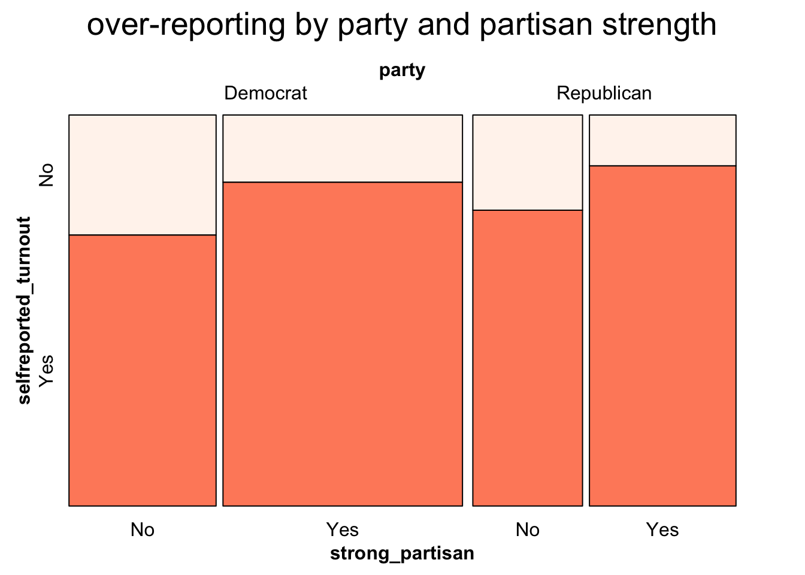
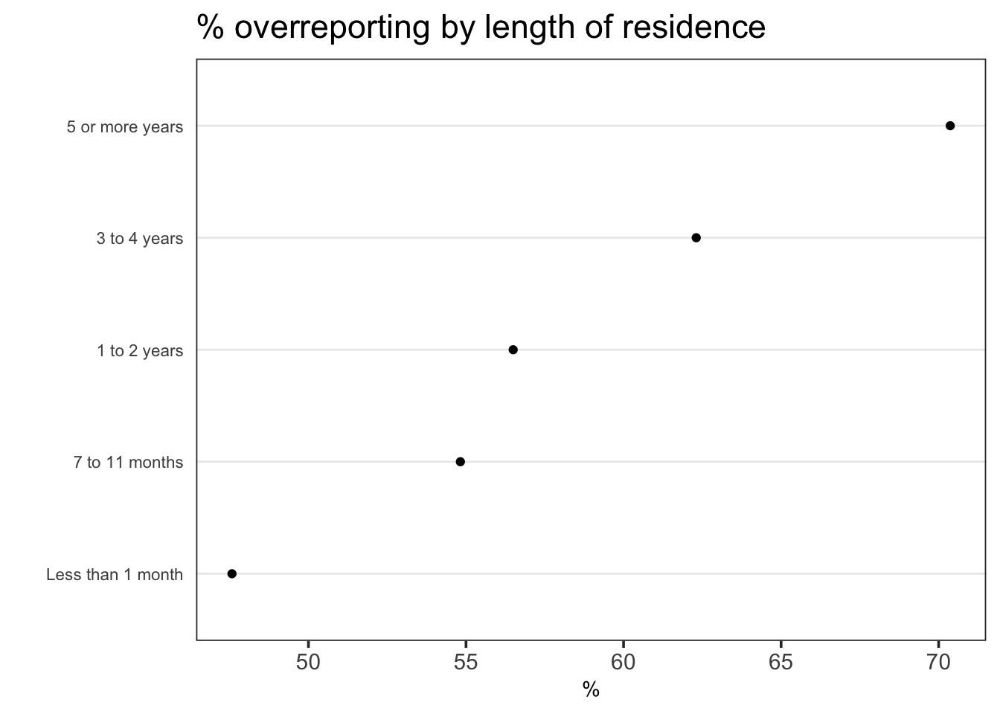

Chapter 5 Results
5.1 Are there state-level variations in over-reporting?
Looking at state-level variations is interesting, first, because if there are any differences in administrative errors, administrative boundaries would be the logical place to look for it. After assuming away errors, however, it’s also possible that certain cultural elements captured by states could influence whether overreporting is higher consistently in certain states over another. To see if there are interesting insight, I plot the overreporting rate by state. I visualize these on the map, as it’d be possible to detect if there are any geographic pattern to this phenomenon.


For year 2016, it seems that overreporting rates tended to be higher in coastal states, and relatively lower in the inner states. This would be an interesting pattern to illustrate, but unfortunately the same said pattern is not observed in previous years, as the maps from 2008 and 2012 indicate. Moreover, just based on the maps it’s hard to tell if overreporting is consistent over years for a given state. To investigate this, we turn to cleveland plots.
** Ideally I would have adjusted the percentage scale to illustrate regular interval, but wasn’t able to fix this.

The cleveland plot of overrporting rates allows us to see the range of overreporting across all states for each election year, as well as to capture trends across years. While the share of the sample claiming to have voted does not form a tight band around the average at state-level, there does seem to be a temporal pattern; overreporting rates were much lower in 2008, whereas the blue dots lying to the right of green suggest that the values for 2016 in generally tended to be higher than in 2012.
Next we look at the share of missing values to the self-reported turnout question. While this information does not directly speak to the phenomenon of overreporting per se, the fact that values are missing may be indicative of the unwillingness by respondents to provide an answer, a behavior that might be correlated also with the tendency to lie.

This plot shows that the share of respondents with missing values for the self-reported turnout question (NA) are somewhat consistent over time within states. The green and blue dots roughly suggest that states with higher overreporting rates in 2012 also tended to have higher rates in 2016. Notice also the very low NA values for 2008. Many of the states in fact did not have a single NA, which is indicated by the missing red dot for many states. This likely suggests that there was a change in the way the survey was conducted. It might not have been possible to proceed with the survey without answering the question in 2008, and this practice may have changed in subsequent years.
Together, the maps and the cleveland plots suggest that state-level information show some trends in administrative errors/overreporting but not a consistent enough pattern to support a statement one way or another. Based on the findings, it seems that any discrepncies that are observed across states are likely to be attributable to administrative errors, rather than “cultural” variation in the likelihood that an individual would feel pressured to lie about not having voted. This would also explain why administrative errors/overreporting do not appear consistent within states over time–to the extent that state variations are explained more by admin errors, this would be highly contingent on the administrative capacity, which can vary depending on the pace of new technology, and would be less sticky than say, “cultural” characteristics. On that note, next we look at some of the demographic and political traits of individuals that may explain overreporting.
5.2 Demographic and political traits of respondents
The dataset includes many demographic and political variables. Below, I sample just a few examples to illustrate interesting points.

The mosaic plot above shows that those with higher level of education are more likely than others to overreport turnout. (To the extent that the likelihood of administrative error in voting record should not differ by gender or voter’s educational level, I assume that the difference is driven by individual propensity to lie, and not by admin error) While it’s possible that the population with higher education also votes at a higher rate, recall that the underlying data is limited to those for whom there is no record of having voted, so we’re looking at the tendency to lie, conditional on not having voted. An explanation for this pattern would be that individuals with higher level of education are (a) aware of the importance of voting as a civic duty, and (b) have peers who would expect them to vote. Hence, conditional on not having voted, the pressure to lie and say that they did would be higher. The mosaic plot indicates that this pattern is found in female as well as male respondents. We can also deduce that at each level of income, males over-report at slightly higher rates than do women, but that the difference across gender categories are smaller than the differences across educational levels.
** ideally the labels on the bottom should not encroach the actual mosaic plots.
Now we look at how overreporting rate differs by gender and party affiliation. What is noticeable is the fact that Independents are less likely than both Democrats and Republicans to overreport, and that overrepoting rate is even lower for those who responded that they were “Unsure” about their political affiliation. In other words, the stronger the political affiliation/identity, the more likely an individual is to say that they voted when in fact they did not. There may be a number of reasons for this behavior. Those who have strong interest in politics are likely to recognize the importance of voting, and conditional on not having voted, the guilt of not having done so and the embarrassment of others finding out would weigh in heavier on this population than others for whom it doesn’t matter as much.

This plot takes into account the strength of partisanship. It shows that while the overall pattern of overreporting is similar for Democrats and Republicans, Republicans are marginally more likely to overreport regardless of partisanship strength. As may be intuitive, those who claimed to be strong partisans, i.e. Strong Republicans or Strong Democrats, were also more likely to overreport.
5.3 Does the size of our social network predict over-reporting?
Similar to the demographic variables surveyed above, one would wonder, does having a large/strong social network influence how likely you are to overreport? While there are no perfect measures of social network size in the CCES dataset, two variables can serve as proxies: (1) length of residency at current address and (2) frequency of church attendance. Those who have lived for a long time within a neighborhood would presumably have a larger local network size, i.e. peers who would matter in terms of putting pressure on them to vote. Similarly, those who are regular church attenders would presumably have more ties to other church members, holding friends and colleagues from other sources constant.
There are caveats that we need to take into consideration of course. If I moved to a new address, but that new location is wiithin my old neighborhood, having only lived there for a month doesn’t mean I have weak ties to my neighbors. Similarly, many people are not religious and therefore don’t have any friends via religion, but are nonetheless are very tightly embedded in their local social network. To deal with the second potential criticism, I acknowledge that the the findings of the church variable can only be used to make inference about the church going population. In other words, whatever conclusion I draw shall be limited to those who would ever consider going to church, and not be meaningful for understanding the pattern among non-Christians.

The pattern in the plot is quite clear. The longer one has been at the current address, the more likely they were to overreport. This is a striking result, because it means that the effect of lying offsets the possible effects of administrative errors. As explained earlier, errors are most likely to arise for people whose records have changed recently. This would mean that those who are in the “Less than 1 month” or “7 to 11 months” categories should show higher rates of overreporting, but the plot shows in fact that the opposite is true, supporting the hypothesis that strong local ties can increase the likelihood of lying out of social desirability bias.

A similar pattern is observed for church attendance. Among those who went to church regularly (more than once a month), overreporting rates are higher. You may be wondering about whether church attendance is really a good proxy. Wouldn’t it be possible that those who are more religious also feel more guilty if they didn’t manage to vote? And as a result, if asked, wouldn’t this pressure make it more likely that they lie? In other words, the source of pressure is not social network size, but religiosity? That would be a valid criticism. I cannot alleviate all doubts, but there are two things to keep in mind in response to that question. First, a level of religiosity strong enough to create guilt would have also motivated individuals to actually go out and vote. We do not know if voter turnout varies by religiosity, and that’s not something I can address with the data at hand. What I can show, though is how religiosity and church attendance related. The stacked bar chart below illustrate the point.
As expected, religiosity and church attendance is strongly correlated. Note, however, even for those who “Seldom” go to church, over 50 % of them think that religion is either “Very” or “Somewhat” important. To obatin a definitve response on whether church attendance has a differential impact on overreporting independent of religiosity would require a statistical analysis that would be a natural next step for this project.
** FYI: I wanted to have the “Very important” appear first in the legend, but I couldn’t figure out a way to do it without changing the factor levels at the data frame level, which would also reverse the presentation of the chart, which is not what I wanted. So current listing is not ideal, but I kept it as is.